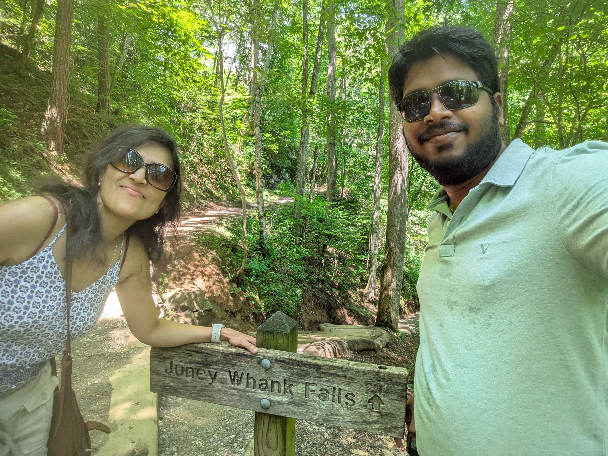

Photo by Sunil Kumar Das
Sunil Das's Personal Site
An organized reading list for scalable, reliable, and performant large-scale systems.
Topics
- Principles - Design principles, CAP theorem, scaling patterns
- Scalability - Microservices, caching, messaging, load balancing
- Availability - Resilience, failover, SRE, chaos engineering
- Performance - Optimization, databases, CI/CD
- Stability - Circuit breaker, fault tolerance
- Intelligence - Big Data, Machine Learning infrastructure
- Architecture - Case studies from tech companies
- Software Architecture - Mark Richards, patterns, styles
- Interview - System design interview prep
- Organization - Engineering management, code review
- Articles - Our curated articles (Oracle, JVM, Kafka, etc.)
- Talks - Engineering talks videos
- Books - Essential books for distributed systems